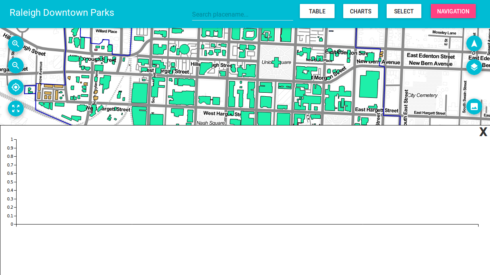
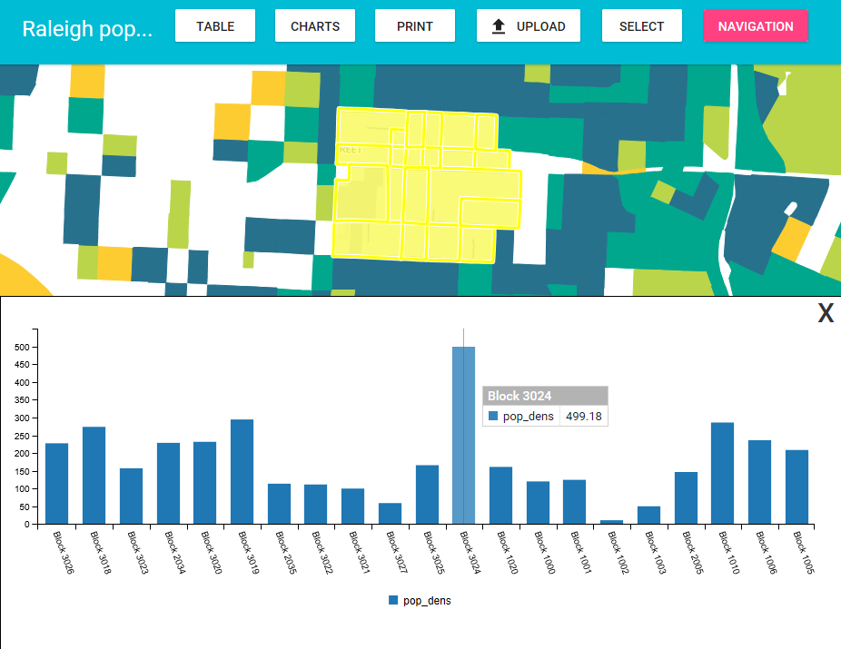

Charts can be created based on the selected features of a given layer. You can open the chart window by clicking the Chart button in the menu.

In the chart window, select one of the available charts using the Chart Name drop-down list
If the layer used by the chart that you have chosen has no selected features, you will see an empty chart, as the one shown above. Use any of the selection tools to select features. When the selection changes, the chart panel is automatically updated, and you will see the chart corresponding to the new selection.
As shown above, overing the chart's elements can provide more precise information.